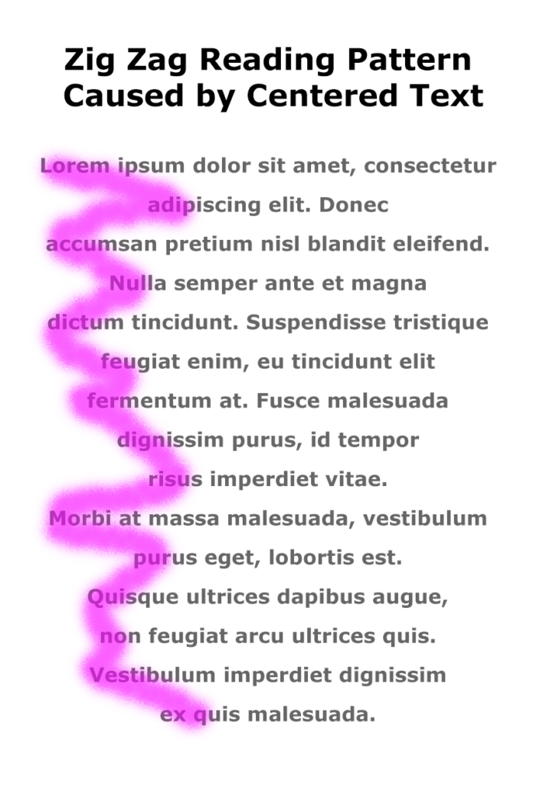

The F-shaped reading pattern comes into play with the tip to avoid centered text alignment in your documents.
When you center text, the left margin zig zags back and forth down the page (as shown in the image on the right), which makes it hard to read in the F-shaped pattern that people prefer.
Instead of skimming down the left margin to look for the highlights and headings, the eye has to search back and forth for the information on the page, as shown in the image on the right.
Watch the LinkedIn Learning tutorial video, Favor flush-left, ragged-right body text (4m14s), for additional explanations and tips on this important guideline for the way that text is aligned on a page.